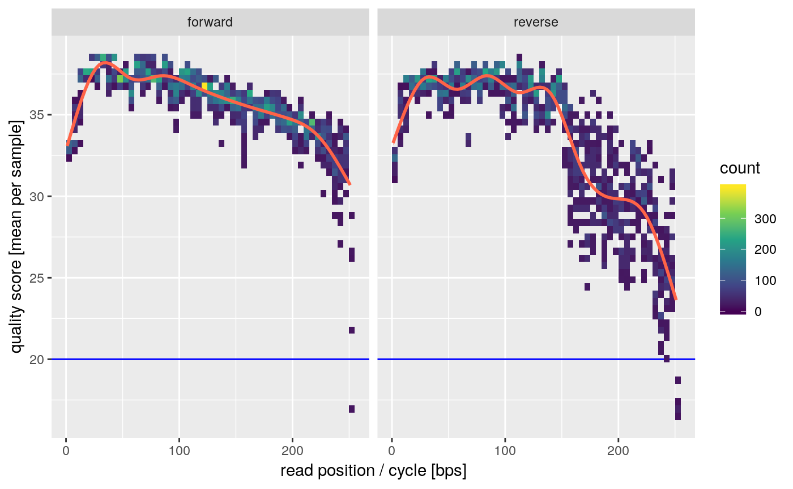
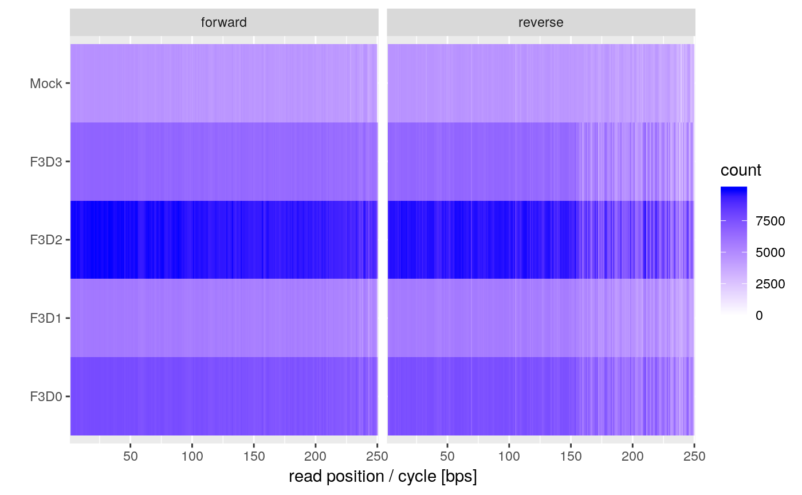
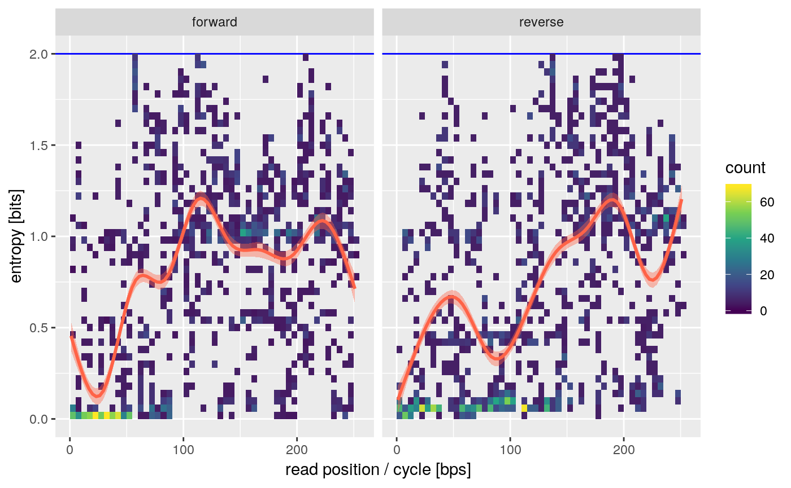

One of the first steps after sequencing is usually assessing the overall quality of your sequencing experiment. Most tools specialize on a per-sample workflow for that which has not worked well for me since we usually analyze medium to large batches of samples. The functions here are meant to facilitate this particular workflow.
First start by loading mbtools:
## Registered S3 methods overwritten by 'ggplot2':
## method from
## [.quosures rlang
## c.quosures rlang
## print.quosures rlang## Also loading:## - dada2=1.12.0
## - data.table=1.12.2
## - ggplot2=3.1.1
## - magrittr=1.5
## - phyloseq=1.28.0
## - ShortRead=1.42.0
## - yaml=2.2.0## Found tools:## - minimap2=2.17-r941
## - slimm=0.3.4
## - samtools=1.9##
## Attaching package: 'mbtools'## The following object is masked _by_ 'package:BiocGenerics':
##
## normalizembtools includes helpers to find your sequencing files. It works out of the box for normal Illumina file names (the ones you get from basespace). There is a small example data set in our package which we can use to illustrate that.
## forward
## 1: /Library/Frameworks/R.framework/Versions/3.6/Resources/library/mbtools/extdata/16S/F3D0_S188_L001_R1_001.fastq.gz
## 2: /Library/Frameworks/R.framework/Versions/3.6/Resources/library/mbtools/extdata/16S/F3D1_S189_L001_R1_001.fastq.gz
## 3: /Library/Frameworks/R.framework/Versions/3.6/Resources/library/mbtools/extdata/16S/F3D2_S190_L001_R1_001.fastq.gz
## 4: /Library/Frameworks/R.framework/Versions/3.6/Resources/library/mbtools/extdata/16S/F3D3_S191_L001_R1_001.fastq.gz
## 5: /Library/Frameworks/R.framework/Versions/3.6/Resources/library/mbtools/extdata/16S/Mock_S280_L001_R1_001.fastq.gz
## reverse
## 1: /Library/Frameworks/R.framework/Versions/3.6/Resources/library/mbtools/extdata/16S/F3D0_S188_L001_R2_001.fastq.gz
## 2: /Library/Frameworks/R.framework/Versions/3.6/Resources/library/mbtools/extdata/16S/F3D1_S189_L001_R2_001.fastq.gz
## 3: /Library/Frameworks/R.framework/Versions/3.6/Resources/library/mbtools/extdata/16S/F3D2_S190_L001_R2_001.fastq.gz
## 4: /Library/Frameworks/R.framework/Versions/3.6/Resources/library/mbtools/extdata/16S/F3D3_S191_L001_R2_001.fastq.gz
## 5: /Library/Frameworks/R.framework/Versions/3.6/Resources/library/mbtools/extdata/16S/Mock_S280_L001_R2_001.fastq.gz
## id injection_order lane
## 1: F3D0 188 1
## 2: F3D1 189 1
## 3: F3D2 190 1
## 4: F3D3 191 1
## 5: Mock 280 1As you can see this will try to infer the id and read directions.
Now we can run the quality assessment workflow step. This step does not take a configuration since it does not require that much prior information. It does take additional arguments to specify the maximum number of sampled reads and a quality cutoff that you consider sufficient. The default is a quality score of 10 which is the average for nanopore reads for instance. This corresponds to a per-base error of about 10%. We can be a bit more stringent here and use a cutoff of 1% error (quality score 20).
## INFO [2019-05-28 16:35:18] Running quality assay for forward reads from 5 files.
## INFO [2019-05-28 16:35:21] Median per base error is 0.016% (median score = 38.00).
## INFO [2019-05-28 16:35:21] Mean per cycle entropy is 0.809 (in [0, 2]).
## INFO [2019-05-28 16:35:21] On average we have 8963.80 +- 6059.73 reads per file.
## INFO [2019-05-28 16:35:21] Running quality assay for reverse reads from 5 files.
## INFO [2019-05-28 16:35:24] Median per base error is 0.020% (median score = 37.00).
## INFO [2019-05-28 16:35:24] Mean per cycle entropy is 0.731 (in [0, 2]).
## INFO [2019-05-28 16:35:24] On average we have 8963.80 +- 6059.73 reads per file.This runs in parallel and will report global quality metrics on the logging interface. We see that we have relatively shallow sequencing data, but the average quality and entropy is pretty good.
In order to indentify points where the quality tanks we can have a look at the average quality profile.

This is a quick global plot giving us the overall average quality per sample. The 5’ (first 10bp) qualities are usually artificially lowered by Illumina sequencers and have some lower confidence. We also see some declining qualities on the 3’ of the reverse reads. This is all pretty typical for MiSeq data.
One additional questions is if we have samples were reads are shorter of have strongly declining qualities compared to other samples. This can be evaluated by the length plot.

You usually want to see horizontal bands of a single color. If the colors become lighter towards the right that means that some samples have shorter reads after trimming which could complicate some workflows.
We can also check how heterogenous the reads positions are. This is quantified by the entropy which tells us how varying a single position is. Any value appreciably larger than 0 is usually fine.

16S amplified regions tend to have some lower variability on the ends which is what we see by the lower entropy on the beginning of the forward and reverse reads (the ends of the amplicon).